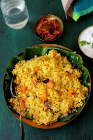

Khichdi

Description
Khichdi is a simple, wholesome Indian dish made by cooking rice and lentils together with mild spices. It is easy to digest and often enjoyed with ghee, yogurt, or pickles.
Ingredients
- 1 cup rice
- 1/2 cup moong dal
- 1 teaspoon cumin seeds
- 1 onion
- 1 tomato
Steps
- Heat ghee in a pressure cooker or pot, add cumin seeds, and let them splutter. Add chopped onions, green chili, and tomatoes (if using) and sauté until soft
- Drain and add soaked rice and dal. Stir well
- Add turmeric, salt, and water. Mix and pressure cook for 2-3 whistles (or simmer in a pot until soft)
- Garnish with fresh coriander and serve hot with ghee, yogurt, or pickle